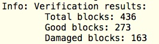
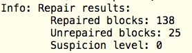
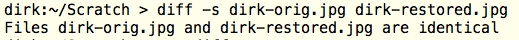

ABOUT¶
Data in various stages of decay and salvation¶
When you store TeraBytes of data for many years, some bits in it will decay. It is hard to get figures about how much damage we can expect. But it might be in the order of a handful per TB per year.
How do we recover from it? Here is an elegant method. Add some redundancy, in the form of checksums. Periodically check the checksums. When there are errors, use the checksums to correct the errors, if possible. If it is not possible, use a backup. But beware: the backup might have errors as well. Even the checksums themselves might have errors. Before we explain our strategy, here is an example that it actually works.
1. original
We start with a photo of the author. It is a 436 KB jpeg image. This is indeed the uncorrupted form.

2. 174 bit errors
Now 174 bit errors are added, at random positions

3. 104 errors in the backup
We will also use a backup, but also this one is corrupted: 104 different errors
{kind=link}
4-5. 27 + 16 bit errors in the checksum files
We also corrupt the checksums: 27 bit errors


and the checksums of the backup are not spared either: 16 bit errors

6. checking the corrupt image with the corrupt checksums
we get 163 damaged blocks
7. after repairing 138 and leaving 25 bit errors
First we try to repair without using the backup, we can repair the majority of damaged blocks, 138.
{kind=link}
But 25 remain unrepaired. See the result.
Let us again check the checksums. 50 damaged blocks! But remember that the checksums themselves were faulty!

Yet, by a combination of restoring and repairing it is effectively possible to correct all errors.
8. We need to use the backup

9. fully restored, thank you

10. There are absolutely no errors left
Account¶
This story I wrote on Good Friday, 2013-03-29. All data and screenshots were directly taken from the computer when I executed the process as described above. By the way, that was a Macbook Air, and the whole process is expressed in a Perl script, which only uses the module Digest:MD5. Both Perl and this module are already present in OSX.
Contents¶
After that, I have tested extensively. The code for this lab is in Github. It is a tool for checksumming files in such a way that you can recover from errors. It also does the recovering. Besides, it is an environment to test various checksumming algorithms and parameters to see what performs best. You find also test data of a few dozens of experiments, summarized in an excel document. The code is here (Perl).
There is a program for checksumming files, verifying, repairing and restoring: checksum.pl.
Then there is a setup to do experiments: perfset.pl creates a pool of corrupt file and organizes tests of various checksum methods.
The question is: wich checksum methods perform best in the brute force search for the original byte sequence?
In order to make file corrupt, you can run corrupt.pl with a variety of parameters.
To gather the results of a series of experiments, use gather.pl. It creates a csv file, that you can use to create nice graphics in a spreadsheet program.